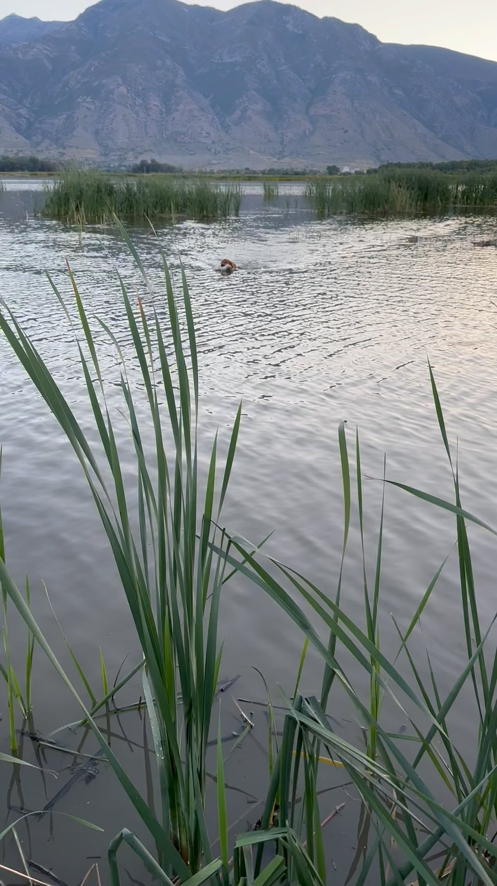

Episode 16 · September 26, 2023 · 1473
Youth waterfowl hunt 2023 & tips on taking a dog out on it's first hunt!

About This Episode
In this episode we talk about our opening day youth waterfowl hunt here in Utah. We also take a dog out on it's first hunt and let you know how that goes. We also discuss tips and things to do to help you dog be successful on it's first hunt. Enjoy and good hunting! Contact us at
Questions about the training topics in this episode? Tyce works with bird dog owners and hunters through Utah Bird Dog Training. Reach out to work with him directly.
Resources & Links
- Utah Bird Dog Training — Work directly with Tyce — professional bird dog training services in Utah.
Transcript
Full transcript for Episode 16: Youth waterfowl hunt 2023 & tips on taking a dog out on it's first hunt!.
Tyce
Hey everyone, welcome to the Bird Dog Podcast. My name is Tyce. Today I want to recap the youth waterfowl opener and use it as a launching point for talking about how to set your dog up for success on its first hunt — specifically for hunters using a boat.
The youth hunt went well. We were on the water early, two boys hunting with me, and finished with two coots, six ducks, and a goose in about three and a half hours. Opening morning is always a little chaotic — lots of birds in the air moving around because they haven't been pressured yet, young birds mixed in with adults, everything in motion. The tradeoff is that birds on opening morning often won't decoy as cleanly as they will once they've been under pressure for a few weeks and have to commit to a spread to find safety. We were shooting pass birds more than decoying birds that morning, which is fine — you're still hunting and there's action. An evening hunt that same day apparently produced cleaner decoying. That tracks — by evening things have usually settled down.
The piece I want to focus on is my dog Boss and how that hunt went for him. Boss is a lab I've been training and running. He'd been on the boat before — I made sure of it. A week or two before the season I took him out into the marsh in the area we were going to hunt, put some decoys out, did some retrieves off the boat in the daylight with no guns. Just let him get comfortable: the engine noise, stepping on and off, working from the boat, seeing the decoys and understanding they're not birds. That prep paid off immediately on opening day. When we fired that first morning, Boss was ready. He wasn't rattled by the guns or the new environment because it wasn't new. He'd seen it.
First bird of the morning was a Canada goose — a cripple that came down across the decoys. I wasn't sure how he'd handle a goose since he hadn't retrieved one before. He went straight to it, tackled it, and brought it right in. No hesitation. A dog that's been built right and is confident will treat a goose like a big duck — same job, different size. He also had to make a couple of blind retrieves later in the hunt on ducks that fell in areas of the marsh where he couldn't mark them visually. He handled on both of them and made the retrieves. That's what the training is for.
If you're planning to hunt out of a boat and your dog has been through a training program but hasn't done boat work: don't wait until opening morning. Go out the week before. Put the dog on the boat, motor around, jump off and on, throw some bumpers. Get the dog comfortable jumping off and landing in the water from the boat's height. Do some retrieves. Let it be fun and positive. When you show up the next week for the real hunt, the dog's brain already has a file folder for "this situation." Instead of trying to figure out the whole thing at once — boat, guns, noise, birds, decoys, dark — it's just doing a job it's already done. That mental preparation is what separates a dog that performs on day one from one that takes half the season to settle in. Thanks for listening.
About the Host
Tyce Erickson
Tyce Erickson is a professional bird dog trainer and the owner of Utah Bird Dog Training in Utah. For nearly two decades he has worked with pointing dogs, retrievers, and family hunting dogs — helping owners build dogs that are capable and enjoyable in the field. The Bird Dog Podcast is an extension of that work: honest conversations on training, hunting, breeding, and everything that goes into a life spent working dogs.
More About Tyce